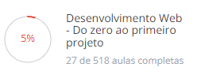

Cidade:Taubaté, SP
WhatsApp:
+55 (12) 99+++-++++
Email:
Samu.prog00@gmail.com
Trabalhar na área de T.I colocando meus aprendizados em
prática
e aprendendo mais
Nenhuma formação acadêmica
Estudando programação
Curso desenvolvimento web - programador BR
Estudante do Programador BR
Adquirir conteúdo e estudar de maneira eficiente programação
Liga dos Eternos Diamantes
Diamante durante 4 anos no lol (Ex jogador), logo,
PHD em paciência, sei
trabalhar com pessoas q estão 0 dispostas a fazer algo. E calvo
por conta de estresse.